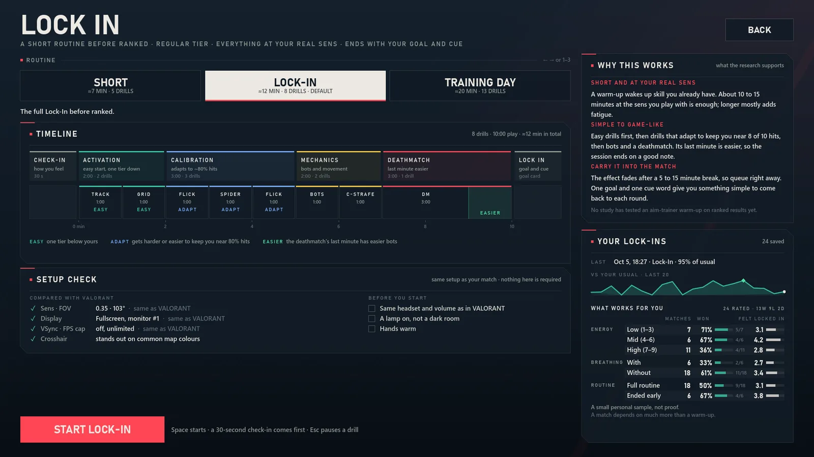

ValTrainer · Warm-up
A VALORANT warm up routine before ranked
Your first ranked round shouldn't be your warm-up. A short routine before you queue gets your hands, eyes and timing to your normal level, without tiring you out. Here is a routine you can do in VALORANT itself, the habits that make it work, and the guided version in ValTrainer.

Why warm up before ranked
A warm-up is not training. You won't get better aim in 12 minutes; you get back to the aim you already have, sooner. Without one, the first rounds often go to slow reactions and stiff flicks. That is why the routine should be short, at your real settings, and end close to the game: a long or very hard session just tires you before the match. The effect also fades during a long break, so queue soon after you finish.
A 12-minute VALORANT warm up routine
You can do this in VALORANT's Range and deathmatch, in an aim trainer, or both.
- Check your setup (30 seconds). Same sensitivity, headset and volume you will play with. Pick one goal for your games, such as "crosshair at head height", and a cue word to remind you of it.
- Easy start (2 minutes). Smooth tracking and big targets. Hit almost everything; this is about getting your arm moving, not scores.
- Flicks and small corrections (3 minutes). Head-sized targets. Aim to hit most of them, around 8 in 10. If you hit everything, make it harder; if you miss half, make it easier.
- Bots and movement (2 minutes). Strafing bots and counter-strafing: stop, then shoot.
- Deathmatch (3 minutes or one match). Play it like the first round: crosshair at head height, one angle at a time. Finish on an easy fight or two, so you leave on a good note.
- Queue now. Say your goal and cue word once more and start the match.
Short on time? Keep the easy start, one flick drill, the bots and two minutes of deathmatch: about 7 minutes.
Aim warm up tips that matter
- Warm up at your real sens. Changing it right before ranked tunes your hands to the wrong setting.
- Go from easy to hard. Starting with your hardest drill mostly produces frustration.
- Don't judge your day by the warm-up score. A bad warm-up doesn't predict a bad game. Use it to get ready, not to test yourself.
- Add what your games need. A minute of spray or your agent's utility is fine; a full training session isn't a warm-up. Practise spray control on practice days.
- Settle your setup before the day. Sort your crosshair and sensitivity on practice days, not five minutes before ranked.
Warm up with ValTrainer's Lock-In
ValTrainer is a free aim trainer for VALORANT players. It imports your sensitivity, crosshair and keybinds, and its Lock-In runs the routine above for you:
- Three routines: Lock-In (about 12 minutes, 8 drills), Short (about 7 minutes, 5 drills) and Training Day (about 20 minutes, 13 drills, for practice days rather than right before ranked).
- Check-in: rate your energy and confidence, pick one goal and one cue word. An optional breathing guide is suggested when you feel wired.
- Easy start, then adaptive drills: tracking and Gridshot one tier below yours, then flicks and Spidershot that get harder or easier to keep you near 80% hits.
- Bots, counter-strafing and a deathmatch whose last minute has easier bots.
- A hand-off card with your goal and cue, a three-step buy-phase routine and a LAUNCH VALORANT button when the Riot Client is installed.
- A setup check that shows whether your sens, FOV, display mode, monitor, VSync and FPS cap match VALORANT.
- Agent Lock-Ins on the Agents screen, and an option to skip to the deathmatch once your drills are back in your usual range (after 3 or more Lock-Ins).
- An optional match log on your PC: after 15 answers it shows what seems to work for you, labelled as a small personal sample.
Everything runs at your real sensitivity. To be clear about the evidence: Lock-In is built on sports-psychology and motor-learning research, but no study has tested an aim-trainer warm-up on ranked results yet.
Questions
How long should a VALORANT warm up be?
About 10 to 15 minutes is enough for most players. A warm-up wakes up skill you already have; longer sessions mostly add fatigue before the match.
Should I warm up in deathmatch or an aim trainer?
Both work. An aim trainer gives a controlled easy-to-hard start, and a deathmatch is the most game-like finish. A few minutes of aim drills followed by one deathmatch covers both.
Should I change my sensitivity to warm up?
Not right before ranked. Warm up at the sensitivity you will play with, so your hands are tuned to the setting you need in the match.
Is ValTrainer's Lock-In free?
Yes. Lock-In is part of ValTrainer, a free, open-source aim trainer for VALORANT players on Windows 10 and 11, with no account and no ads.
More guides for VALORANT players
Get ValTrainer
Free, open source, no account. Windows 10 and 11.
Download for Windows Install help
Or in a terminal: winget install Valtrainer.ValTrainer · Also on
itch.io · Questions? Discord